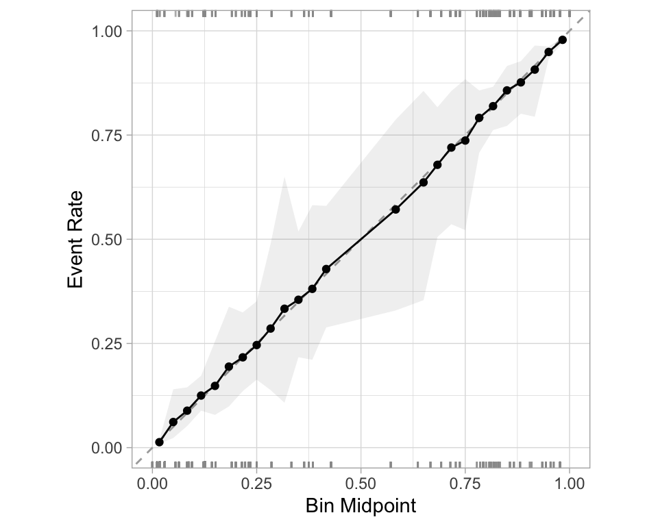
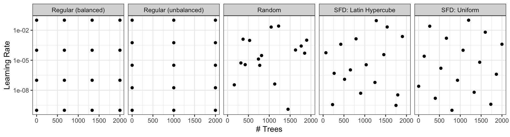

library(tidymodels)
library(forested)
# Set a seed
set.seed(123)
# IntitalizeInitialize Split
forested_split <- initial_split(forested, prop = 0.8)
forested_train <- training(forested_split)
forested_test <- testing(forested_split)
# Build Resamples
forested_folds <- vfold_cv(forested_train, v = 10)
# Set a model specification with mode (default engine)
dt_mod <- decision_tree(cost_complexity = 0.0001, mode = "classification")
# Bare bones workflow & fit
forested_wflow <- workflow(forested ~ ., dt_mod)
forested_fit <- fit(forested_wflow, forested_train)
# Extracting Predictions:
augment(forested_fit, new_data = forested_train)
#> # A tibble: 5,685 × 22
#> .pred_class .pred_Yes .pred_No forested year elevation eastness northness
#> <fct> <dbl> <dbl> <fct> <dbl> <dbl> <dbl> <dbl>
#> 1 No 0.0114 0.989 No 2016 464 -5 -99
#> 2 Yes 0.636 0.364 Yes 2016 166 92 37
#> 3 No 0.0114 0.989 No 2016 644 -85 -52
#> 4 Yes 0.977 0.0226 Yes 2014 1285 4 99
#> 5 Yes 0.977 0.0226 Yes 2013 822 87 48
#> 6 Yes 0.808 0.192 Yes 2017 3 6 -99
#> 7 Yes 0.977 0.0226 Yes 2014 2041 -95 28
#> 8 Yes 0.977 0.0226 Yes 2015 1009 -8 99
#> 9 No 0.0114 0.989 No 2017 436 -98 19
#> 10 No 0.0114 0.989 No 2018 775 63 76
#> # ℹ 5,675 more rows
#> # ℹ 14 more variables: roughness <dbl>, tree_no_tree <fct>, dew_temp <dbl>,
#> # precip_annual <dbl>, temp_annual_mean <dbl>, temp_annual_min <dbl>,
#> # temp_annual_max <dbl>, temp_january_min <dbl>, vapor_min <dbl>,
#> # vapor_max <dbl>, canopy_cover <dbl>, lon <dbl>, lat <dbl>, land_type <fct>Lecture 19
Evaluation & Tuning
Confusion matrix 

- A confusion matrix is a table that describes the performance of a classification model on a set of data for which the true values are known.
- It counts the number of accurate and false predictions, separated by the truth state
What to do with a confusion matrix

1. Accuracy 
- Accuracy is the proportion of true results (both true positives and true negatives) among the total number of cases examined.
- It is a measure of the correctness of the model’s predictions.
- It is the most common metric used to evaluate classification models.

2. Sensitivity 
- Sensitivity is the proportion of true positives to the sum of true positives and false negatives.
- It is useful for identifying the presence of a condition.
- It is also known as the true positive rate, recall, or probability of detection.
3. Specificity 
- Specificity is the proportion of true negatives to the sum of true negatives and false positives.
- It is useful for identifying the absence of a condition.
- It is also known as the true negative rate, and is the complement of sensitivity.

ROC curves
The ROC AUC is the probability that a randomly chosen positive instance is ranked higher than a randomly chosen negative instance.
The ROC AUC is a measure of how well the model separates the two classes.
The ROC AUC is a number between 0 and 1.
ROC AUC = 1 💯
- perfect classification
ROC AUC = 0.5 😐
- random guessing
ROC AUC < 0.5 😱
- worse than random guessing

ROC curves 
(A ROC AUC of 0.7-0.8 is considered acceptable, 0.8-0.9 is good, and >0.9 is excellent.)
# Assumes _first_ factor level is event; there are options to change that
augment(forested_fit, new_data = forested_train) |>
roc_curve(truth = forested, .pred_Yes) |>
dplyr::slice(1, 20, 50)
#> # A tibble: 3 × 3
#> .threshold specificity sensitivity
#> <dbl> <dbl> <dbl>
#> 1 -Inf 0 1
#> 2 0.235 0.885 0.972
#> 3 0.909 0.969 0.826
augment(forested_fit, new_data = forested_train) |>
roc_auc(truth = forested, .pred_Yes)
#> # A tibble: 1 × 3
#> .metric .estimator .estimate
#> <chr> <chr> <dbl>
#> 1 roc_auc binary 0.975Separation vs calibration
The ROC captures separation. - The ROC curve shows the trade-off between sensitivity and specificity at different thresholds.

The Brier score captures calibration. - The Brier score is a measure of how well the predicted probabilities of an event match the actual outcomes.

- Good separation: the densities don’t overlap.
- Good calibration: the calibration line follows the diagonal.
Calibration plot: We bin observations according to predicted probability. In the bin for 20%-30% predicted prob, we should see an event rate of ~25% if the model is well-calibrated.
Metrics Selection model performance 
We can use metric_set() to combine multiple calculations into one
forested_metrics <- metric_set(accuracy, specificity, sensitivity)
augment(forested_fit, new_data = forested_train) |>
forested_metrics(truth = forested, estimate = .pred_class)
#> # A tibble: 3 × 3
#> .metric .estimator .estimate
#> <chr> <chr> <dbl>
#> 1 accuracy binary 0.944
#> 2 specificity binary 0.931
#> 3 sensitivity binary 0.954Metrics and metric sets work with grouped data frames!
augment(forested_fit, new_data = forested_train) |>
group_by(tree_no_tree) |>
accuracy(truth = forested, estimate = .pred_class)
#> # A tibble: 2 × 4
#> tree_no_tree .metric .estimator .estimate
#> <fct> <chr> <chr> <dbl>
#> 1 Tree accuracy binary 0.946
#> 2 No tree accuracy binary 0.941
augment(forested_fit, new_data = forested_train) |>
group_by(tree_no_tree) |>
specificity(truth = forested, estimate = .pred_class)
#> # A tibble: 2 × 4
#> tree_no_tree .metric .estimator .estimate
#> <fct> <chr> <chr> <dbl>
#> 1 Tree specificity binary 0.582
#> 2 No tree specificity binary 0.974Note
The specificity for "Tree" is a good bit lower than it is for "No tree".
So, when this index classifies the plot as having a tree, the model does not do well at correctly identifying the plot as non-forested when it is indeed non-forested.
Previously - Setup 

library(tidyverse)
# Ingest Data
# URLs for COVID-19 case data and census population data
covid_url <- 'https://raw.githubusercontent.com/nytimes/covid-19-data/master/us-states.csv'
pop_url <- '/Users/mikejohnson/Downloads/co-est2023-alldata.csv'
#pop_url <- 'https://www2.census.gov/programs-surveys/popest/datasets/2020-2023/counties/totals/co-est2023-alldata.csv'
# Clean Census Data
census = readr::read_csv(pop_url) |>
filter(COUNTY == "000") |> # Filter for state-level data only
mutate(fips = STATE) |> # Create a new FIPS column for merging
select(fips, contains("2021")) # Select relevant columns for 2021 data
# Process COVID-19 Data
state_data <- readr::read_csv(covid_url) |>
group_by(fips) |>
mutate(
new_cases = pmax(0, cases - dplyr::lag(cases)), # Compute new cases, ensuring no negative values
new_deaths = pmax(0, deaths - dplyr::lag(deaths)) # Compute new deaths, ensuring no negative values
) |>
ungroup() |>
left_join(census, by = "fips") |> # Merge with census data
mutate(
m = month(date), y = year(date),
season = case_when( # Define seasons based on month
m %in% 3:5 ~ "Spring",
m %in% 6:8 ~ "Summer",
m %in% 9:11 ~ "Fall",
m %in% c(12, 1, 2) ~ "Winter"
)
) |>
group_by(state, y, season) |>
mutate(
season_cases = sum(new_cases, na.rm = TRUE), # Aggregate seasonal cases
season_deaths = sum(new_deaths, na.rm = TRUE) # Aggregate seasonal deaths
) |>
distinct(state, y, season, .keep_all = TRUE) |> # Keep only distinct rows by state, year, season
ungroup() |>
select(state, contains('season'), y, POPESTIMATE2021, BIRTHS2021, DEATHS2021) |> # Select relevant columns
drop_na() |> # Remove rows with missing values
mutate(logC = log(season_cases +1)) # Log-transform case numbers for modelingPreviously - Data Usage 

Previously - Feature engineering 

Tagging parameters for tuning 

With tidymodels, you can mark the parameters that you want to optimize with a value of tune().
The function itself just returns… itself:
Boosted Tree Tuning Parameters 


b_mod <-
boost_tree(trees = tune(), learn_rate = tune()) |>
set_mode("regression") |>
set_engine("xgboost")
(b_wflow <- workflow(rec, b_mod))
#> ══ Workflow ════════════════════════════════════════════════════════════════════════════════════════════════════════════════════════════════════════════════════════════════════════════════════════════
#> Preprocessor: Recipe
#> Model: boost_tree()
#>
#> ── Preprocessor ────────────────────────────────────────────────────────────────────────────────────────────────────────────────────────────────────────────────────────────────────────────────────────
#> 4 Recipe Steps
#>
#> • step_rm()
#> • step_dummy()
#> • step_scale()
#> • step_center()
#>
#> ── Model ───────────────────────────────────────────────────────────────────────────────────────────────────────────────────────────────────────────────────────────────────────────────────────────────
#> Boosted Tree Model Specification (regression)
#>
#> Main Arguments:
#> trees = tune()
#> learn_rate = tune()
#>
#> Computational engine: xgboost2. Iterative Search
We could start with a few points and search the space:

Different types of grids 


Space-filling designs (SFD) attempt to cover the parameter space without redundant candidates. We recommend these the most.
Create a grid 

A parameter set can be updated (e.g. to change the ranges).
Create a grid 

- The
grid_*()functions create a grid of parameter values to evaluate. - The
grid_space_filling()function creates a space-filling design (SFD) of parameter values to evaluate. - The
grid_regular()function creates a regular grid of parameter values to evaluate. - The
grid_random()function creates a random grid of parameter values to evaluate. - The
grid_latin_hypercube()function creates a Latin hypercube design of parameter values to evaluate. - The
grid_max_entropy()function creates a maximum entropy design of parameter values to evaluate.
Create a SFD curve 

set.seed(12)
(grid <-
b_wflow |>
extract_parameter_set_dials() |>
grid_space_filling(size = 25))
#> # A tibble: 25 × 2
#> trees learn_rate
#> <int> <dbl>
#> 1 1 0.0287
#> 2 84 0.00536
#> 3 167 0.121
#> 4 250 0.00162
#> 5 334 0.0140
#> 6 417 0.0464
#> 7 500 0.196
#> 8 584 0.00422
#> 9 667 0.00127
#> 10 750 0.0178
#> # ℹ 15 more rowsCreate a regular grid 

set.seed(12)
(grid <-
b_wflow |>
extract_parameter_set_dials() |>
grid_regular(levels = 4))
#> # A tibble: 16 × 2
#> trees learn_rate
#> <int> <dbl>
#> 1 1 0.001
#> 2 667 0.001
#> 3 1333 0.001
#> 4 2000 0.001
#> 5 1 0.00681
#> 6 667 0.00681
#> 7 1333 0.00681
#> 8 2000 0.00681
#> 9 1 0.0464
#> 10 667 0.0464
#> 11 1333 0.0464
#> 12 2000 0.0464
#> 13 1 0.316
#> 14 667 0.316
#> 15 1333 0.316
#> 16 2000 0.316Update parameter ranges 

b_param <-
b_wflow |>
extract_parameter_set_dials() |>
update(trees = trees(c(1L, 100L)),
learn_rate = learn_rate(c(-5, -1)))
set.seed(712)
(grid <-
b_param |>
grid_space_filling(size = 25))
#> # A tibble: 25 × 2
#> trees learn_rate
#> <int> <dbl>
#> 1 1 0.00215
#> 2 5 0.000147
#> 3 9 0.0215
#> 4 13 0.0000215
#> 5 17 0.000681
#> 6 21 0.00464
#> 7 25 0.0464
#> 8 29 0.0001
#> 9 34 0.0000147
#> 10 38 0.001
#> # ℹ 15 more rowsThe results 


Note that the learning rates are uniform on the log-10 scale and this shows 2 of 4 dimensions.
Choosing tuning parameters 


Let’s take our previous model and tune more parameters:
Grid Search 


Grid Search 


b_res
#> # Tuning results
#> # 10-fold cross-validation
#> # A tibble: 10 × 5
#> splits id .metrics .notes .predictions
#> <list> <chr> <list> <list> <list>
#> 1 <split [513/57]> Fold01 <tibble [25 × 7]> <tibble [0 × 3]> <tibble [1,425 × 7]>
#> 2 <split [513/57]> Fold02 <tibble [25 × 7]> <tibble [0 × 3]> <tibble [1,425 × 7]>
#> 3 <split [513/57]> Fold03 <tibble [25 × 7]> <tibble [0 × 3]> <tibble [1,425 × 7]>
#> 4 <split [513/57]> Fold04 <tibble [25 × 7]> <tibble [0 × 3]> <tibble [1,425 × 7]>
#> 5 <split [513/57]> Fold05 <tibble [25 × 7]> <tibble [0 × 3]> <tibble [1,425 × 7]>
#> 6 <split [513/57]> Fold06 <tibble [25 × 7]> <tibble [0 × 3]> <tibble [1,425 × 7]>
#> 7 <split [513/57]> Fold07 <tibble [25 × 7]> <tibble [0 × 3]> <tibble [1,425 × 7]>
#> 8 <split [513/57]> Fold08 <tibble [25 × 7]> <tibble [0 × 3]> <tibble [1,425 × 7]>
#> 9 <split [513/57]> Fold09 <tibble [25 × 7]> <tibble [0 × 3]> <tibble [1,425 × 7]>
#> 10 <split [513/57]> Fold10 <tibble [25 × 7]> <tibble [0 × 3]> <tibble [1,425 × 7]>Grid results 
Tuning results 
collect_metrics(b_res)
#> # A tibble: 25 × 9
#> trees min_n learn_rate .metric .estimator mean n std_err .config
#> <int> <int> <dbl> <chr> <chr> <dbl> <int> <dbl> <chr>
#> 1 458 2 0.00422 mae standard 1.54 10 0.0259 Preprocessor1_Model01
#> 2 417 3 0.0590 mae standard 0.347 10 0.0143 Preprocessor1_Model02
#> 3 833 5 0.0226 mae standard 0.333 10 0.0133 Preprocessor1_Model03
#> 4 125 6 0.00536 mae standard 5.34 10 0.0476 Preprocessor1_Model04
#> 5 708 8 0.196 mae standard 0.359 10 0.0120 Preprocessor1_Model05
#> 6 791 9 0.00205 mae standard 2.08 10 0.0300 Preprocessor1_Model06
#> 7 84 11 0.0464 mae standard 0.405 10 0.0186 Preprocessor1_Model07
#> 8 250 13 0.316 mae standard 0.356 10 0.0133 Preprocessor1_Model08
#> 9 292 14 0.00127 mae standard 7.20 10 0.0562 Preprocessor1_Model09
#> 10 583 16 0.0110 mae standard 0.353 10 0.0153 Preprocessor1_Model10
#> # ℹ 15 more rowsChoose a parameter combination 
show_best(b_res, metric = "mae")
#> # A tibble: 5 × 9
#> trees min_n learn_rate .metric .estimator mean n std_err .config
#> <int> <int> <dbl> <chr> <chr> <dbl> <int> <dbl> <chr>
#> 1 833 5 0.0226 mae standard 0.333 10 0.0133 Preprocessor1_Model03
#> 2 542 21 0.121 mae standard 0.342 10 0.0146 Preprocessor1_Model13
#> 3 958 17 0.0750 mae standard 0.344 10 0.0130 Preprocessor1_Model11
#> 4 750 30 0.249 mae standard 0.346 10 0.0123 Preprocessor1_Model19
#> 5 417 3 0.0590 mae standard 0.347 10 0.0143 Preprocessor1_Model02Choose a parameter combination 
Create your own tibble for final parameters or use one of the tune::select_*() functions:
Checking Calibration 


The whole game